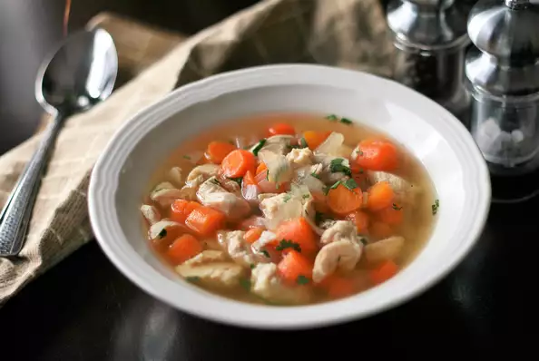

Brown Egg Bistro
Chicken Soup

Description
This quick recipe is a perfect dinner when you don't have much time but want that homemade flavor
Ingredients
2 (14.5 ounce) cans chicken broth
2 cups baby carrots
1 onion, chopped
1 clove garlic, minced
⅛ teaspoon celery salt
2 skinless, boneless chicken breast halves
1 tablespoon chopped fresh cilantro (Optional)
Steps
1. Bring the chicken broth to a boil in a medium saucepan over medium high heat. Add the carrots, onion, garlic and celery salt.
2. Reduce heat to low and add the chicken breast. Cover and simmer for 20 minutes.
3. Carefully remove the chicken breast, cut it into chunks and return it to the pot. Stir in the cilantro OR dill to taste.